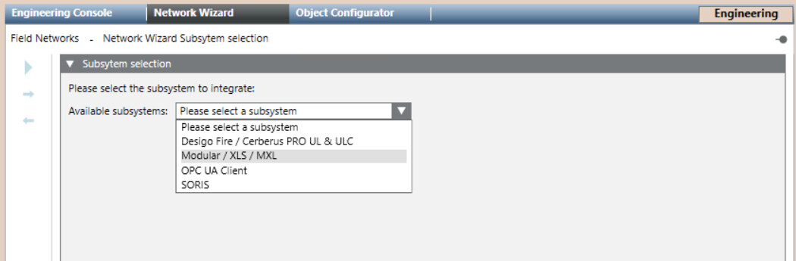
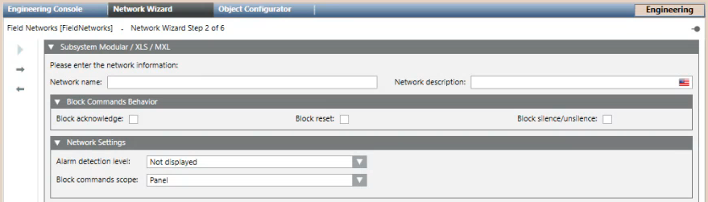
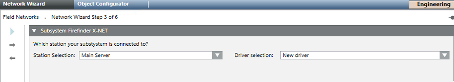
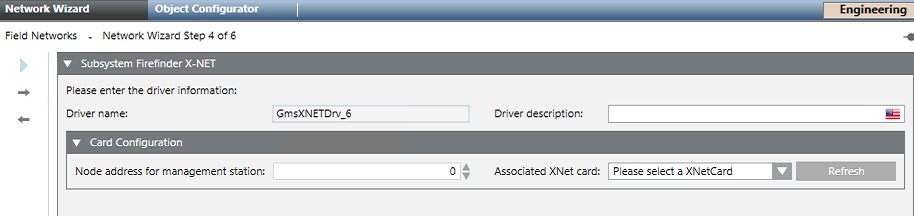
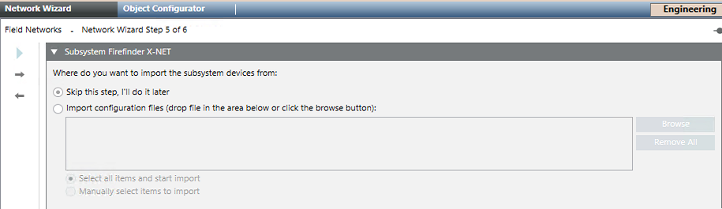
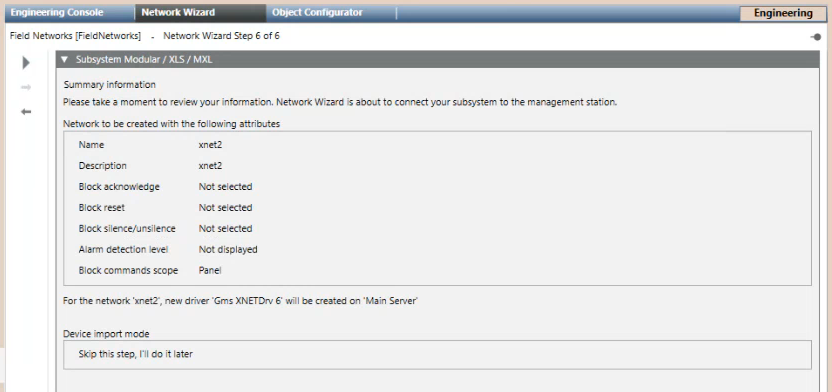

Running XNET Fire Network Wizard
Scenario
You want to create a new XNET network for XNET Fire Control Panels. This wizard provides a quick procedure that simplifies the general configuration workflow.See also:
- XNET Network Configuration Reference
- Configuring an XNET Fire Network
Prerequisites
- You are familiar with the Fire Control Panels integration via XNET. See the reference section.
- The following extension modules were installed and included in the active project:
- Network Setup Wizard
- One or more of the fire panel extension modules:
- FireFinder XLS MXL
- Desigo Fire Safety Modular UL
- Cerberus Pro Modular UL - System Manager is in Engineering mode.
- System Browser is in Management View.

To speed configuration, make sure the Desigo CC Transaction Mode is set to Simple or the Automatic Switch of Transaction Mode is set to True.
The automatic switch setting is recommended. Without it, to re-enable the logs, you need to set the Transaction Mode to Logging at the end of the configuration procedure.
1 – Select the Subsystem
- Select Project > Field Network.
- In the Network Wizard tab, in Available subsystems, select the type of fire subsystem.
- Click
 to proceed to the next page.
to proceed to the next page.

2 – Configure Network Settings
- Enter the fire Network name. The corresponding Network description field is filled out automatically and you can customize it to provide a better definition for users.
- (Optional) In Block Commands Behavior, select the check box to enable broadcasting of the acknowledge, reset, and silence/unsilence commands across the fire network.
- In Network Settings, from the Alarm detection level drop-down list, select the geographic grouping level of the Detection node in which alarms will be assigned. Select Not displayed to exclude the Detection node and generate alarms at the original device level.
- In Network Settings, from the Block command scope drop-down list, select Panel if you want block command settings to be set and executed at the individual panel level or select Network to have block command settings at the network level. In the latter case the user must be the owner of the entire network.
NOTE: You cannot change the ownership setting in the Network Wizard, the default value is Panel Control via Request/Grant/Deny. - Click to proceed to the next page.

3 – Select the Driver
- In Station Selection, select a server or FEP station.
- In Driver Selection, do one of the following:
- Select New Driver to create a new XNET driver.
- Select a previously created XNET driver.
- Click to proceed to the next page.

4 – Configure Driver Settings
- (Optional) In the main expander, customize the Driver description.
NOTE: Keep the description different from that of any other driver on the same station. - In the Card Configuration expander, check and modify as necessary the default driver settings:
- In Node address for management station, enter the value (1-64) assigned to Desigo CC in the panel configuration tool as Management System Node.
- In Associated XNET card, in the drop-down list, select the XNET card with which you want to connect.
- (Optional) If necessary, click the Refresh button to view the XNET cards installed on the machine.
- Click to proceed to the next page.

5 – Import the Fire System Configuration
- (Optional) Select Skip this step, I’ll do it later to skip the import step and display the driver parameters.
- Select Import configuration files and do the following:
- Click Browse.
- Locate and select the file you want import and click Open.
- Repeat this operation for every configuration file you want import.
- The files display in the box.
- (Optional) Click Remove All to clear the box and repeat this step from the beginning.
- Do one of the following:
- Select all items and start import to import all items (panel configuration) from the selected files.
- Select Manually select items to import to select specific items during the next step.
- Click to proceed to the next page.

6 – Start the Network Wizard
- Check the summary information.
(Optional) If you want to modify any item, click Previous to go back to the previous page. After the required modifications, press Next to reach this final page again.
to go back to the previous page. After the required modifications, press Next to reach this final page again. - Click Start
 to run the import.
to run the import. - The System Manager dialog box appears, click Yes to confirm the start.
NOTE: If you chose Manually select items to import in the previous step, a selection page displays. Do the following: - Select the item you want import in the left box Source Items e in click Right Icon
 . Repeat this operation for every item you want import or click All Right Icon
. Repeat this operation for every item you want import or click All Right Icon  to import them all.
to import them all. - (Optional) Click Left Icon
 to remove one item from the right box Items to import or the All Left Icon
to remove one item from the right box Items to import or the All Left Icon  to remove them all.
to remove them all. - Click Import.
- The import starts and a progress bar displays.
- After a few seconds, the driver and network nodes appear in System Browser. If the import was selected, information from all panels is imported from the XML file.
- A backup copy of the imported file is saved in the project folder, in the shared\Imported_Config_Files\[subsystem name]\ subfolder.
The file is compressed into a ZIP file named after the current date and time. For example, 2021-10-22_13-52-07.zip.
NOTE: See also the configuration procedure of the backup folder (search for Handling Backup Size of Imported Files).
You can control the disk space occupancy, and also disable the backup copy altogether.
NOTE: Do not use this wizard to modify any settings. Refer instead to the general configuration procedure.
